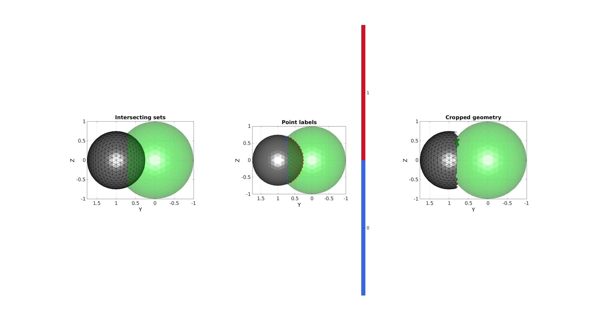
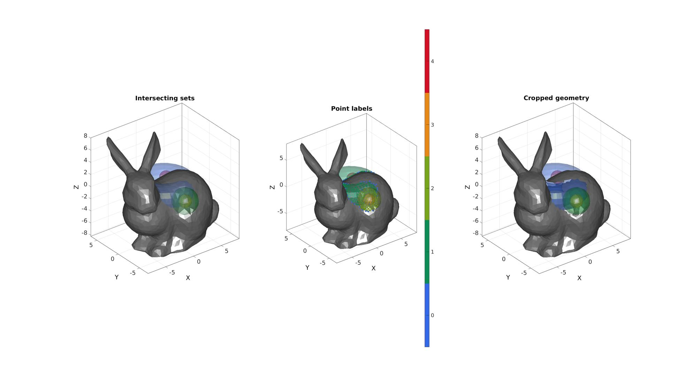

simplexImIntersect
Below is a demonstration of the features of the simplexImIntersect function
Contents
Syntax
[regionlabel]=simplexImIntersect(F1,V1,V2,voxelSize);
Description
This function uses the input simplex (or simplices) defined by F1 (faces), V1 (vertices), and C1 (boundary labels) to label the vertices V2 according to what simplex regions they are contained in. The labels are stored in the output regionLabel. A vertex inside a simplex region is labelled with the boundary label of the simplex region. Vertices outside of all simplices are labelled with NaN. Points are labelled based on the patch2Im function, i.e. the following steps are used: 1) The simplex is converted to an image where voxels intensities denote simplex region labels. (see patch2Im). 2) The vertices in V2 are converted to image coordinates in this image 3) The image coordinates are converted to image voxel indices 4) Voxel indices are used to retrieve the labels from the simplex image.
The image constructed uses the optional input voxelSize (the default if not provided is half of the mean edge size of the input simplex). The completeness/accuracy of the labelling depends on the voxel size. Some points are labelled as 0 which means they are found inside boundary voxels and cannot, based on the current voxel size, be assigned as outside or inside a particular region. All vertices labelled as NaN or a value >0 are labelled correctly. However some of the vertices labelled as 0 may actually be inside a simplex region or outside all simplex regions, i.e. 0 denotes that their status is unknown given the voxel size used.
See also patch2im
Examples
clear; close all; clc;
Plot settings
faceAlpha1=1; faceAlpha2=0.3; fontSize=15; markerSize=35;
Create example geometries
[F1,V1,~]=geoSphere(3,1); %First simplex [F2,V2,~]=geoSphere(3,0.75); %Second simplex V2(:,2)=V2(:,2)+1; %Shift second sphere
Determine optional voxel size input from mean edge size
[D1]=patchEdgeLengths(F1,V1); [D2]=patchEdgeLengths(F2,V2); d=mean([D1(:);D2(:)]); voxelSize=d/2;
Find points outside of a simplex
[regionLabel]=simplexImIntersect(F1,V1,[],V2,voxelSize); logicOut=isnan(regionLabel); logicFacesOut=all(logicOut(F2),2);
Visualize results
cFigure; subplot(1,3,1); hold on; title('Intersecting sets') gpatch(F1,V1,'g','none',faceAlpha2); gpatch(F2,V2,'kw','k',faceAlpha1); axisGeom; view(-90,0); camlight headlight; subplot(1,3,2); hold on; title('Point labels') gpatch(F1,V1,'g','none',faceAlpha2); gpatch(F2,V2,'kw','none',faceAlpha1); scatterV(V2,markerSize,regionLabel,'filled'); colormap gjet; icolorbar; axisGeom; view(-90,0); camlight headlight; subplot(1,3,3); hold on; title('Cropped geometry') gpatch(F1,V1,'g','none',faceAlpha2); gpatch(F2(logicFacesOut,:),V2,'kw','k',faceAlpha1); axisGeom; view(-90,0); camlight headlight; drawnow;
Defining a multi boundary set
%Example surface set 1 r=2; %Sphere radius rc=3; %Central radius nr=15; nc=25; ptype='quad'; [Fs1,Vs1]=patchTorus(r,nr,rc,nc,ptype); [Fs2,Vs2]=quadSphere(2,r,2); Vs2(:,2)=Vs2(:,2)-5; [Fs3,Vs3]=quadSphere(2,r/2,2); Vs3(:,2)=Vs3(:,2)-5; [Fs4,Vs4]=quadSphere(3,r/2,2); Vs4(:,1)=Vs4(:,1)+2; Vs4(:,2)=Vs4(:,2)+2; [F1,V1,C1]=joinElementSets({Fs1,Fs2,Fs3,Fs4},{Vs1,Vs2,Vs3,Vs4}); %Example surface 2 [F2,V2]=stanford_bunny; %Bunny surface [F2,V2]=subtri(F2,V2,1); %Refine surface r=sqrt(sum(V2.^2,2)); %Radii from centre of bunny to "normalize" shape V2=V2./max(r); %"Normalize" V2=V2*11; %Scale up
[regionLabel]=simplexImIntersect(F1,V1,C1,V2,voxelSize); logicOut=isnan(regionLabel); logicFacesOut=all(logicOut(F2),2);
Visualize results
cFigure; subplot(1,3,1); hold on; title('Intersecting sets') gpatch(F1,V1,C1,'none',faceAlpha2); gpatch(F2,V2,'kw','none',faceAlpha1); axisGeom; camlight headlight; subplot(1,3,2); hold on; title('Point labels') gpatch(F1,V1,C1,'none',faceAlpha2); gpatch(F2,V2,'kw','none',faceAlpha1); scatterV(V2,markerSize,regionLabel,'filled'); colormap gjet; icolorbar; axisGeom; camlight headlight; subplot(1,3,3); hold on; title('Cropped geometry') gpatch(F1,V1,C1,'none',faceAlpha2); gpatch(F2(logicFacesOut,:),V2,'kw','none',faceAlpha1); axisGeom; camlight headlight; drawnow;

GIBBON www.gibboncode.org
Kevin Mattheus Moerman, gibbon.toolbox@gmail.com
GIBBON footer text
License: https://github.com/gibbonCode/GIBBON/blob/master/LICENSE
GIBBON: The Geometry and Image-based Bioengineering add-On. A toolbox for image segmentation, image-based modeling, meshing, and finite element analysis.
Copyright (C) 2019 Kevin Mattheus Moerman
This program is free software: you can redistribute it and/or modify it under the terms of the GNU General Public License as published by the Free Software Foundation, either version 3 of the License, or (at your option) any later version.
This program is distributed in the hope that it will be useful, but WITHOUT ANY WARRANTY; without even the implied warranty of MERCHANTABILITY or FITNESS FOR A PARTICULAR PURPOSE. See the GNU General Public License for more details.
You should have received a copy of the GNU General Public License along with this program. If not, see http://www.gnu.org/licenses/.